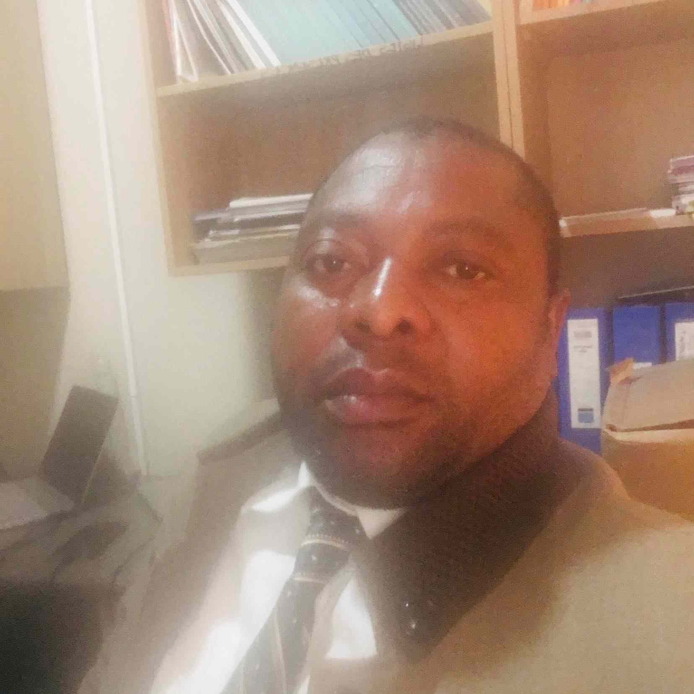

Benjamin Kirongozi | WWD 130

My name is Benjamin Kirongozi Mazuya. I am Congolese, from the Democratic Republic of Congo. I am married to Naomi Amukwabi; our marriage was sealed in the Kinshasa Temple. We have three children, all boys, whom we love very much. I am a member of The Church of Jesus Christ of Latter-day Saints, and I serve on the elders quorum council in our Kolwezi 1 ward. I have been working at the pyrometallurgy plant as a maintenance storekeeper supervisor for the past 7 years up to the present. I am pleased to meet everyone. Throughout my academic and professional journey, I have developed a strong appreciation for teamwork. I enjoy encouraging others, listening to them, and working collaboratively without pressure.